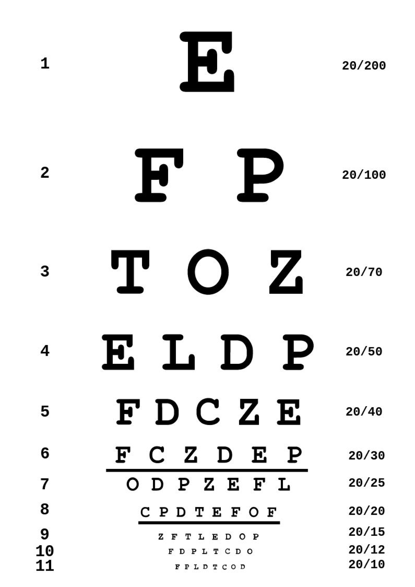

Fall-risk Assessment
30-Second Chair Stand Test Instructions
-
Setup
- Place a sturdy chair against a wall
- Position your phone/camera to capture full body movement
- Ensure the area around the chair is clear
-
Starting Position:
- Sit in the middle of the chair
- Feet flat on the floor, shoulder-width apart
- Arms crossed against your chest
-
Test Procedure:
- When ready, press "Start Test"
- On "GO", stand up completely
- Then sit down completely
- Repeat this for 30 seconds
-
Count:
- Each complete stand (up AND down) counts as one stand
- Continue for the full 30 seconds
Safety Note: Stop immediately if you experience any pain or dizziness. Have someone nearby for safety if needed.
Gait Analysis Assessment
⚠️ Clicking this button will redirect you to another page.
Gait Analysis Assessment
⚠️ Clicking this button will redirect you to another page.
Vision Assessment Instructions
-
Setup
- Position your phone/tablet/laptop 2 feet (about 0.6 meters) away.
- Ensure good lighting and avoid screen glare.
-
Test Procedure:
- Read the letters on the screen from top to bottom.
- Click on the button 'Enter Line Number' below, and input the smallest line you can read.
- The app will evaluate your visual acuity.
